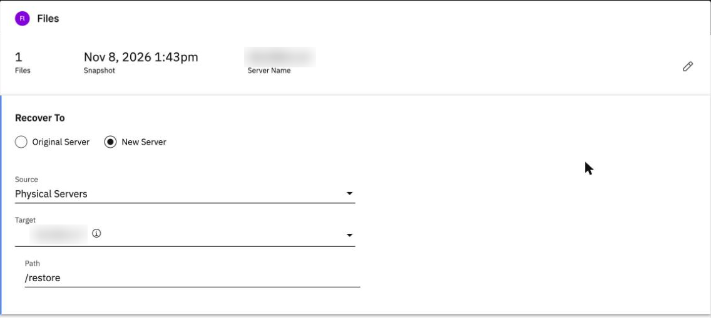
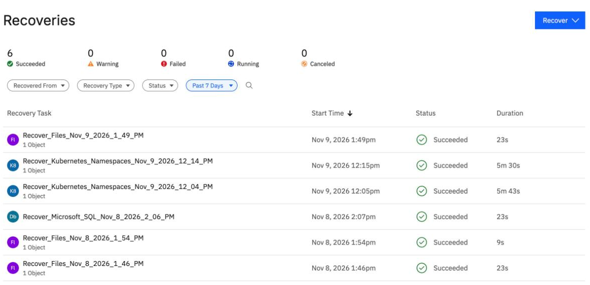
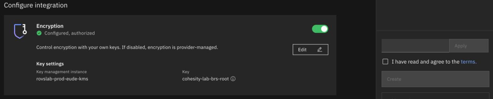
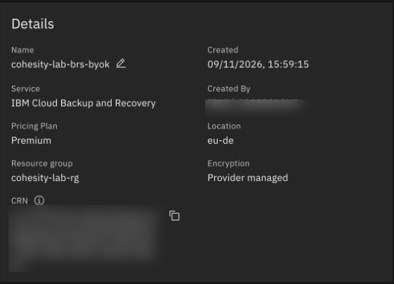
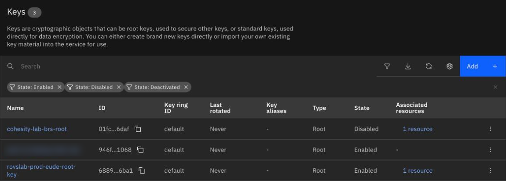

Restore to another server, and your own encryption key
By the end you can restore a folder onto a second server, say where it lands, and explain what you can and cannot check about your own encryption key.
Northgate Freight is a made-up company. Today it restores a folder from one server's backup onto a second server, then looks at what it takes to order a backup instance that uses its own encryption key.
Every number and screen in this unit comes from real runs in our lab, some at the command line and some in the console. The servers are blurred in the screenshots. Some lab resource names show in the key screens.
Where the files land
A restore can go to a different registered server, into a new folder. In our lab the source server held /data/docs. The target was a second Linux server.
Northgate picks /data/docs and sets the Path to /restore. Where do the files land?
Show the answer
The folder you pick lands directly under the Path, so docs landed at /restore/docs. The path /data is not recreated. The folder is created if it is missing. The restored files were owned by root, mode 644.
What must be true of the second server before you restore to it?
Show the answer
A restore to another server needs a second Linux server registered as a source. In the console: Sources, Register Source, Physical, Direct, pick the Connector Agent and type the server's address. In our lab the server was then listed, not protected.
Restore to a new server
These screens come from the BRS console in our lab. Click where you would click. After two misses the right place is marked.

You ticked docs and chose New Server. Where do you set the folder on the other server?
Show where
Right. Path. It starts as /tmp/Recover_<date>_<time>; change it to /restore. Source is Physical Servers and Target is the other server. Keep the Recovery Options as they are and click Recover.

Which row is the restore of the files to the other server?
Show where
Right. The top row, started at 1:49 pm: Succeeded, 23s. The other rows are earlier recoveries.
A field name that is not accepted
Northgate writes the same restore as a command-line request. It sets restoreToOriginalPaths to false and names the new folder with a field it guessed. The first try fails with this message.
"restoreToOriginalPaths": false "alternateRestoreBaseDirectory": "/restore" Field alternate_restore_base_directory is not specified
What is wrong?
Show the answer
The message names the field in a different spelling and does not say that the name is wrong. The plug-in's own help text shows alternateRestoreDirectory. With that name the restore succeeded, in 27 s.
After the console restore, Northgate counts the files under /restore on the target and checks them against a list made on the source. What does it find?
Show the answer
505 files, and 505 matched. The command-line run had checked 500 of 500.
What you can and cannot check
BRS takes your key only when the instance is created. The lab ordered a second instance to test it. The console's order form starts with Encryption on and a key already chosen, with a warning "Service authorization required".
Northgate's running instance uses provider-managed encryption. Can it switch to its own key?
Show the answer
You cannot change the key of an existing instance. IBM takes the key only when the instance is created, so the test made a second instance.

Northgate orders a new instance with its own key. Where does the order form say the key is set up?
Show where
Right. Configured, authorized. Before this, the Review step showed Service authorization required: BRS to Key Protect, role Reader. Click Authorize, then Confirm. The policy that was made covers the whole key store, not only the key the dialog showed. Then tick the terms and click Create. In our lab the instance was created at 15:59:15 UTC and active by 15:59:58.

This is the new instance's page. Where does it show how the instance is encrypted?
Show where
Right. Encryption. It says Provider managed, and that is wrong for this instance, which has our own key. The page says the same for an instance with your own key, so it proves nothing. Check with the key store instead. In our lab kp registrations listed the new instance, and the instance's parameters carried the key.

Which figure in the key store shows that something is tied to the key?
Show where
Right. 1 resource under Associated resources. In this screen the key is also Disabled: the lab disabled it as a test.
The lab disabled the key for about two minutes and called the configuration API every 20 seconds. What happened?
Show the answer
HTTP 200 every 20 seconds from 16:04:46 to 16:06:41. The same happened in the first run.
What does that show about backups while the key is disabled?
Show the answer
The policy list is configuration, not the backup data in the object store. The instance held no backup, so the effect on stored data is still untested. A backup and a restore with the key disabled, key rotation and deleting the key were not tested either.
Three questions
You restore /data/docs to another server with the Path /restore. Where does docs land?
Show the answer
The folder you pick lands directly under the Path. The path /data is not recreated.
An instance's page says Encryption: Provider managed. Does that prove your key was not used?
Show the answer
Check with the key store: kp registrations lists the instance, and the key shows 1 associated resource.
Review from unit 4.3. After a restore over the original SQL Server database, the next group run reads 0 bytes. Why?
Show the answer
Edit the group and tick the database again. In our lab the next run then read 50.5 MB.
You can restore elsewhere and say what your key does
A folder restored to another server lands directly under the Path you give. A key of your own is set only when an instance is created, and the console's instance page says Provider managed either way. In our lab, disabling the key did not stop the configuration API; what it does to stored data is untested.